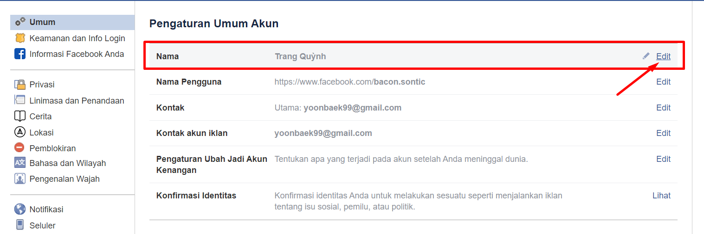

Cách đổi, đặt tên Facebook 1 CHỮ trên điện thoại & máy tính

Ty Nguyen
CEO ❤️ AhaChat. Love babies & chatbot.Thông thường, khi bạn lập Facebook thì việc đặt tên cho Facebook mặc định từ 2 chữ trở lên. Tuy nhiên, với một số người dùng muốn đặt tên Facebook chỉ 1 chữ nằm tạo cá tính và độc đáo riêng. Vậy có cách nào đặt tên - đổi tên Facebook 1 chữ không? Cách đổi tên - đặt tên Facebook 1 chữ có khó không? Tất cả những thắc mắc này sẽ được giải đáp trong bài viết dưới đây, đừng bỏ lỡ nhé!
I. Chi tiết cách đổi tên - đặt tên Facebook 1 chữ trên máy tính
Để có thể đổi tên - đặt tên Facebook 1 chữ trên máy tính, trước hết bạn cần phải đăng nhập vào tài khoản facebook cá nhân muốn đổi tên - đặt tên thông qua website facebook.com, rồi thực hiện theo các bước hướng dẫn sau:
Bước 1: Tại giao diện trang chủ của tài khoản Facebook cá nhân, bạn bấm vào hình tam giác ngược trên thanh tìm kiếm và bấm chọn Cài đặt như hình dưới.
Bước 2: Tiếp đến, giao diện Cài đặt xuất hiện, tại menu bên tay phải màn hình, bạn bấm chọn mục Ngôn ngữ và khu vực.
Bước 3: Tại giao diện Cài đặt ngôn ngữ và vùng, bạn tìm mục Ngôn ngữ trên Facebook rồi bấm vào Chỉnh sửa, sau đó bạn đổi ngôn ngữ sử dụng sang Bahasa Indonesia và bấm vào Lưu thay đổi.
Bước 4: Sau khi giao diện Facebook của bạn chuyển sang ngôn ngữ Bahasa Indonesia, bạn nhìn sang menu phía tay trái màn hình và bấm chọn mục Umum.
Bước 5: Tại giao diện mục Umum, bạn nhìn sang bên phải tại mục Nama, bạn bấm vào Edit để chỉnh sửa tên.

Bước 6: Tiếp theo, xuất hiện giao diện thay đổi tên - đặt tên Facebook 1 chữ như hình dưới, lúc này bạn giữ nguyên giao diện này.
Bước 7: Tiếp đến, bạn cần phải thay đổi Proxy mạng
- Trước tiên, bạn cần tải tiện ích Geoproxy về máy. Để tải thêm tiện ích Geoproxy bạn mở thêm 1 tab mới trên Chrome bằng cách ấn vào đường link tải Geoproxy.
- Giao diện tải tiện ích Chrome xuất hiện, bạn ấn Thêm vào Chrome.
- Sau khi tải tiện ích GeoProxy thành công, biểu tượng của GeoProxy sẽ xuất hiện trên thanh công cụ tìm kiếm như hình dưới, bạn bấm vào đó.
- Tiếp đến, bạn bấm vào mục Select rồi tìm quốc gia Indonesia và bấm chọn vào đó.
- Sau khi bạn bấm chọn vào quốc gia Indonesia, xuất hiện 1 list danh sách các địa chỉ Proxy cho người dùng bấm chọn, Lúc này, bạn click vào 1 Proxy bất kỳ để chọn sử dụng.
- Khi bạn bấm chọn được Proxy sử dụng, tiện ích GeoProxy sẽ thông báo địa chỉ Proxy bạn đang dùng tại Proxy set.
Bước 8: Sau khi bạn thay đổi Proxy mạng thành công, bạn quay lại giao diện đổi tên Facebook lúc nãy. Tại đây, bạn chỉ cần nhập tên facebook 1 chữ mà bạn muốn thay đổi, sau đó bấm vào Tinjau Perubahan để lưu lại.
Bước 9: Tiếp theo, xuất hiện giao diện xác minh việc thay đổi thông tin bằng cách nhập mật khẩu của tài khoản Facebook đó. Sau khi bạn nhập xong mật khẩu, bạn bấm vào Simpan Perubahan để tiếp tục.
Ngay lập tức, tên Facebook của bạn chỉ hiện thị 1 chữ theo tên bạn đã đặt mà không bị thay đổi bất kỳ thông tin nào trên tài khoản Facebook cá nhân của bạn.
Bước 10: Sau khi đổi tên thành công, bạn ấn vào biểu tượng GeoProxy ở cuối thanh tìm kiếm, và bấm chọn Do not use proxy để tắt địa chỉ Proxy này hoặc bạn có thể gỡ hẳn tiện ích ra khỏi máy bạn.
***Liên quan:
- Cách đổi tên Facebook trên điện thoại/ máy tính cực đơn giản
- Hướng dẫn cách đổi tên Fanpage Facebook trong 1 nốt nhạc.
Bước 11: Bạn quay trở về giao diện cài đặt chung của tài khoản Facebook cá nhân, bạn tìm đến mục Bahasa dan wilayah sau đó bấm vào Edit của mục Bahasa Facebook để đổi về ngôn ngữ Việt Nam
Như vậy là bạn đã đổi tên - đặt tên Facebook 1 chữ thành công chỉ với các bước cực kỳ đơn giản.
2. Cách đổi tên - đặt tên Facebook 1 chữ trên điện thoại di động
Bước 1: Đầu tiên, để đổi tên - đặt tên facebook 1 chữ trên điện thoại, bạn cần phải tải các ứng dụng Fake Ip trên điện thoại. Và với mỗi điện thoại có hệ điều hành khác nhau thì các ứng dụng Fake ip cũng khác nhau.
+ Hệ điều hành IOS (iPhone/ iPad/ )
- Với iphone, bạn tải ứng dụng OpenVPN Connect trong App Store trên điện thoại của bạn.
- Sau khi bạn tải xong ứng dụng OpenVPN Connect, bạn mở ứng dụng lên và để nguyên đó.
- Tiếp tục quay lại App Store tải ứng dụng Best VPN Proxy OvpnSpider.
- Tiếp đó, mở ứng dụng Best VPN Proxy OvpnSpider, bạn gõ chữ ID (viết tắt của chữ Indonesia) để tìm kiếm, sau đó chọn 1 proxy bất kỳ để fake IP.
+ Hệ điều hành Android
- Với điện thoại có hệ điều hành Android, bạn tải ứng dụng OpenVPN for Android. Sau khi tải xong, bạn mở ứng dụng lên và để nguyên như vậy.
- Tiếp theo, bạn quay lại CH Play tiếp tục tải ứng dụng Indonesia VPN - Plugin for OpenVPN.
- Sau khi bạn tải ứng dụng Indonesia VPN - Plugin for OpenVPN, bạn mở ứng dụng này lên, tiến hành theo các bước hướng dẫn để fake IP Indonesia
Bước 2: Sau khi bạn đã hoàn thành xong việc fake IP Indonesia thành công trên điện thoại của bạn. Tiếp theo, bạn mở ứng dụng Facebook trên điện thoại, đăng nhập vào tài khoản Facebook bạn muốn đổi tên - đặt tên 1 chữ. Sau khi đăng nhập, tại giao diện trang chủ bạn bấm chọn vào biểu tượng 3 gạch ngang ở góc phải bên dưới màn hình và kéo xuống dưới tìm đến mục Ngôn ngữ ứng dụng
Bước 3: Tại giao diện Ngôn ngữ ứng dụng, bạn tìm ngôn ngữ Indonesia => tiếp đến bạn bấm vào Ubah ke Indonesia để đồng ý đổi Facebook sang ngôn ngữ Indonesia.
Bước 4: Sau khi Facebook được chuyển sang ngôn ngữ Indonesia, màn hình sẽ quay về trang chủ Facebook, bạn bấm vào biểu tượng 3 gạch ngang, kéo xuống dưới bấm chọn mục Pengaturan & Privasi, sau đó bấm chọn Pengaturan.
Bước 5: Tiếp theo, bạn bấm chọn vào mục Informasi Pribadi và sau đó bấm chọn phần Nama.
Bước 6: Sau khi bấm chọn mục Nama, bạn tiến hành đổi tên - đặt tên Facebook 1 chữ theo mong muốn và bấm Tinjau Perubahan để lưu lại.
Bước 7: Cuối cùng, Facebook sẽ hiện thông báo yêu cầu bạn nhập mật khẩu để xác minh việc đổi tên - đặt tên, lúc này bạn điền mật khẩu của tài khoản Facebook bạn muốn đổi tên.
Như vậy, chỉ với những thao tác cơ bản là việc đổi tên - đặt tên Facebook 1 chữ trên điện thoại thành công.
Hy vọng với những thông tin chia sẻ trên đây đã giúp bạn biết cách đổi tên - đặt tên Facebook 1 chữ trên máy tính lẫn điện thoại di động. Trong quá trình thực hiện, nếu bạn có bất kỳ thắc mắc hay khó khăn gì đừng quên để lại câu hỏi trong mục bình luận dưới đây, chúng tôi sẽ giải đáp giúp bạn trong thời gian sớm nhất. Chúc bạn thực hiện thành công!